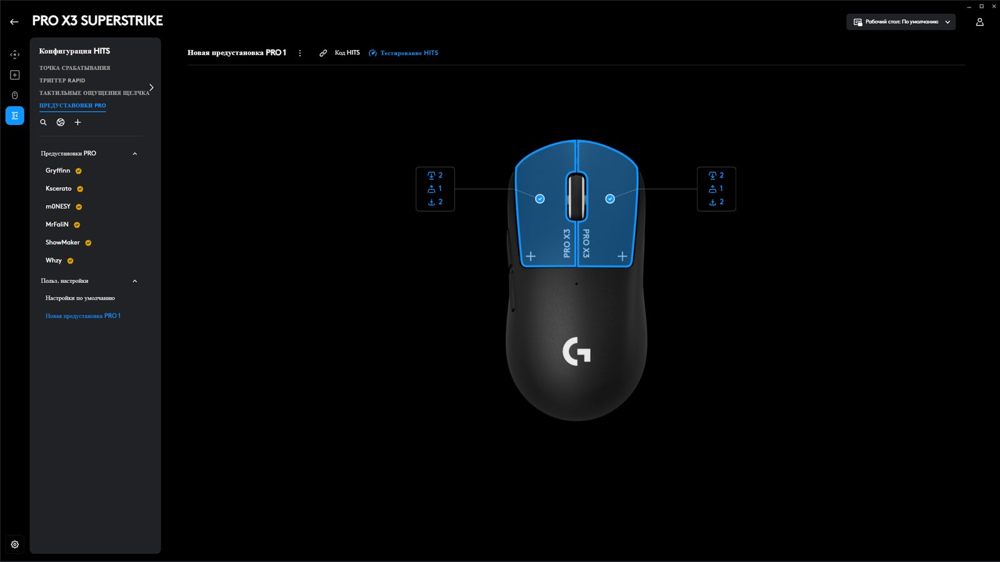
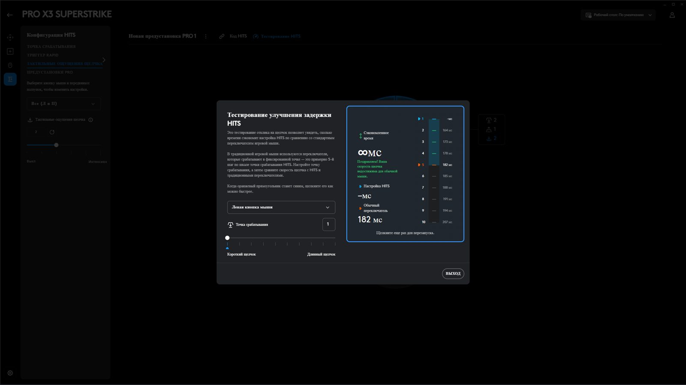
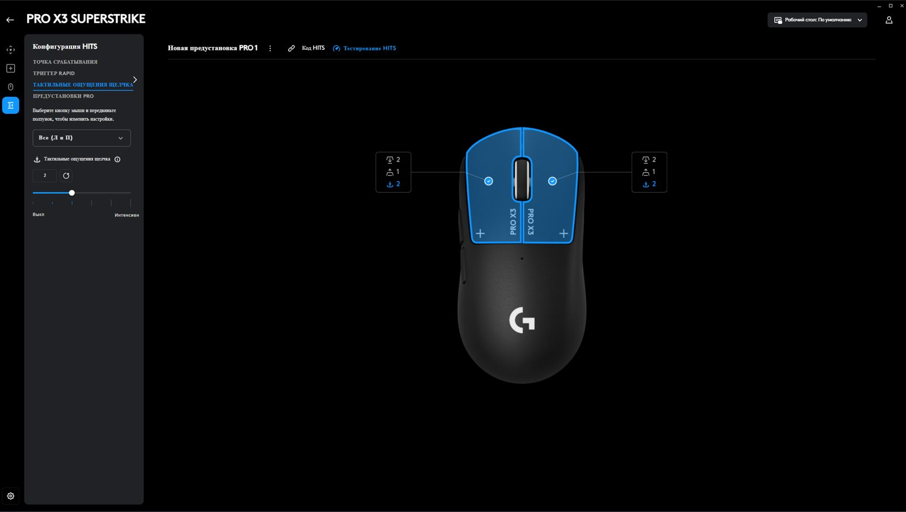
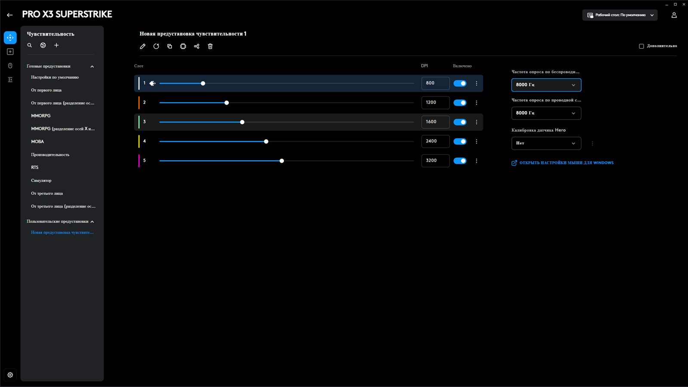

Balans
u/Hajdu70 · obzor muallifi
X2 balansi yomon edi, X3 da esa mukammal — eski GPX2 darajasida. Logitech vakili ham izohda rahmat aytdi.
Klik tugmasi ichida mexanik kalit yo'q. O'rnida elektromagnit g'altak bosilish chuqurligini o'lchaydi, vibratsiya esa "chiq" degan hissni beradi. X3 — bu texnologiyaning ikkinchi avlodi: balansi tuzatilgan, batareyasi uzoqroq, chipseti yangi. Narxi ham oshgan.
X2 SUPERSTRIKE 2026-yil fevralda chiqdi, X3 esa atigi 7 oydan keyin. Shakl, tugmalar, HITS kalitlari, g'ildirak va oyoqchalar bir xil. Barcha asosiy farq ichki qismda.
HITS — Haptic Inductive Trigger System. Oddiy sichqonchada klik doim bir joyda ishlaydi. Bu yerda esa qayerda ishlashini siz tanlaysiz. Slayderni suring.
Raqamlar mening G HUB "HITS testirovaniyasi"dan: oddiy kalit darajasida reaksiyam 182 ms chiqdi, dastur boshqa darajalar uchun vaqtni hisoblab ko'rsatdi. 1-darajada esa natija o'rniga "∞ ms" chiqdi — dasturdagi kulgili xato.
Aktuatsiya nuqtasi (1–10). Tugmani qancha bosganda klik hisoblanadi. 1 — pat tegizgandek, 10 — to'liq bosish. Oddiy sichqoncha taxminan 5-daraja.
Rapid Trigger (1–5). Barmoqni qancha ko'targanda tugma qayta "tayyor" bo'ladi. Kichik qiymat = tez-tez otish (spam), lekin tasodifiy qo'yib yuborish xavfi bor.
Klik haptikasi (O'chiq + 1–5). Mexanik "chiq" yo'q, uni vibratsiya taqlid qiladi. MacBook trackpad'i yoki Steam Deck'ga o'xshash his. Kuchliroq = ko'proq batareya.
Kechikish da'vosi. Logitech: oddiy kalitlarga nisbatan 30 ms gacha tezroq. Bu tugma qisqaroq yo'l bosgani hisobiga — elektronikaning o'zi emas.
Reddit'dagi egasi: 1-1 sozlamada klik eng tez, lekin noto'g'ri kliklar juda ko'p. U 3-3 da o'ynaydi.
Uchalasi bir xil korpusda. Farq — tugma texnologiyasi, chip va batareyada. Juftlikni tanlang. Yashil belgi — g'olib.
| Parametr | PRO X3 SUPERSTRIKESENT 2026 · $199.99 | PRO X2 SUPERSTRIKEFEV 2026 · $179.99 | PRO X SUPERLIGHT 22023 · $159.99 |
|---|
Rasmiy maksimum. X2/X3 uchun Club386 real testi chiziqli hisob bilan (4000 Hz, haptika 3).
Club386 OSLTT, 100 klik o'rtachasi. Kamroq = yaxshiroq. 8000 Hz'da ikkala Superstrike ham 0.02 ms dan oshmadi.
HITS'ning butun "sehri" G HUB orqali ochiladi. Sozlaganingizdan keyin hammasi sichqonchaning ichki xotirasiga yoziladi — boshqa kompyuterda ham ishlaydi.
10 daraja, "Qisqa klik" dan "Uzun klik" gacha. Chap va o'ng tugmani alohida yoki birga sozlash mumkin.
5 ta qaytish nuqtasi. Tugma qancha ko'tarilganda yana otishga tayyor bo'lishini belgilaydi.
"Vykl" (o'chiq) dan "Intensiv" gacha 5 kuch. O'chirsangiz — klik umuman sezilmaydi, g'alati tajriba.
Logitech homiyligidagi pro o'yinchilarning aniq HITS sozlamalari, bir bosishda.
"HITS kodi" bilan sozlamani do'stingizga ulashing. "Testirovaniye HITS" — reaksiyangizni o'lchab, har daraja qancha vaqt tejashini ko'rsatadi.
5 ta DPI slot, simli va simsiz rejimda 8000 Hz gacha polling, turli gilamchalar uchun HERO sensor kalibrovkasi. BHOP rejimi — g'ildirak uchun 100–1000 ms kechikish.




Ikki xil savol bor: sichqoncha klikni qancha tez yuboradi va odam bundan qancha tez reaksiya qiladi. Javoblar har xil.
Natija: 1000 Hz'da X3 o'rtacha 0.12 ms — sinalgan sichqonchalar orasida eng yaxshi va eng barqaror (min–max farqi 0.18 ms).
Natija: Optik kalitli Sensei Pro bilan X3 orasida amaliy farq yo'q. Muallif fikricha, uyqu va suv ichish reaksiyaga ancha ko'proq ta'sir qiladi.
Natija: X3 soatiga ~1% yo'qotdi (~100 soat), X2 esa ~80 soat. Real hayotda +50% emas, taxminan +25%.
"Staff's Choice". HITS — kelajak, lekin X3 yangi avloddan ko'ra X2 ning sayqallangan versiyasiga o'xshaydi. X2 egalariga yangilanish kerak emas.
"Recommended". Sinagan eng past kechikishli sichqoncha. X2 dastlab qanday bo'lishi kerak edi — X3 shunday.
Reaksiya testida X3 (1 va 3-daraja) oddiy optik sichqonchadan sezilarli farq qilmadi.
X2 balansi yomon edi, X3 da esa mukammal — eski GPX2 darajasida. Logitech vakili ham izohda rahmat aytdi.
Avval farq sezmadim, keyin ikkalasini yonma-yon o'ynab ko'rdim — X2 aniq oldinga og'ir ekan.
HITS tizimi og'ir va eng oldinda turadi. Orqadan og'irlik olib tashlansa, sichqoncha yana oldinga og'ib qoladi.
50 dollar arzon bo'lsa olardim. Izohlarda ko'pchilik $200 ni ortiqcha deb hisoblaydi.
G'ildirak bosilganda bosimni ozgina bo'shatsangiz, klik uziladi. Muallif tekshirdi: X3 da ham shunday.
Yaxshi ushlaydi, yangi GPX2 yoki X2 dagidek. X3 biroz rezinaroq sezilishi mumkin.
"If the X2 was the alpha game, it is a beta game"— u/Hajdu70, r/MouseReview
HITS, shakl va hatto (Yevropada) og'irlik bir xil. Faqat oldinga og'irlik o'yiningizga xalaqit bersa o'ylab ko'ring. Batareyani shunchaki tez-tez quvvatlang.
Shakl tanish, sakrash HITS uchun. Haptik klik hammaga yoqmaydi — agar imkon bo'lsa avval qo'lda ushlang yoki chegirmani kuting.
Superstrike olmoqchi bo'lsangiz, X3 aniq yaxshiroq. Byudjet cheklangan bo'lsa — chegirmadagi X2 deyarli bir xil tajriba beradi.
Mening xulosam: PRO X3 SUPERSTRIKE — bugungi kundagi eng ilg'or klik texnologiyasiga ega sichqoncha va X2 ning barcha asosiy kamchiliklarini (balans, batareya) tuzatgan versiya. Lekin bu inqilob emas, sayqal. Yangi narx, eski oyoqchalar va g'ildirak $200 lik sichqonchaga mos emas. HITS sizni avtomatik ravishda yaxshiroq o'yinchi qilmaydi — lekin klikni aynan o'zingizga moslash imkonini beradi.
Ball — mening shaxsiy bahom, qayta yozing.